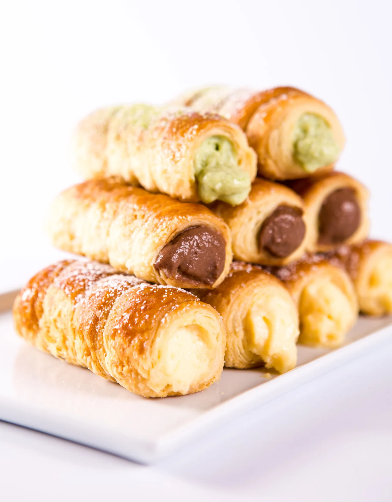

We want you to feel at home the moment you walk into our shop.

Strudels, made by hand
We take pride in the uniqueness and freshness of our products, and in superior taste. Between the flaky, crispy pastry sit fresh fruit of your choice, creamy custard and cream.
Freddie Strudels is a place for pastry lovers and the sweet tooth, and the perfect place to catch up with friends over coffee and pastries. We are open on all public holidays.
- A$10
- a slice of strudel
- 11
- strudel flavours
- 10am
- opening time, Wednesday to Monday